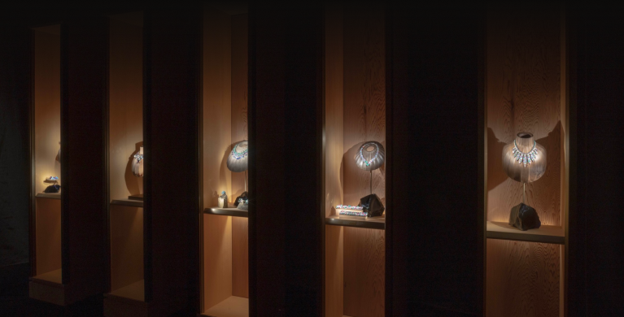
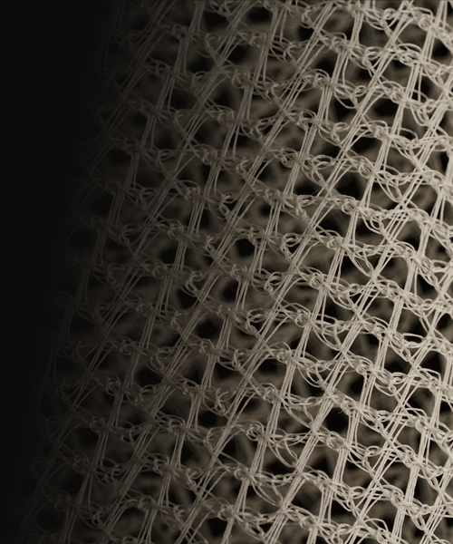
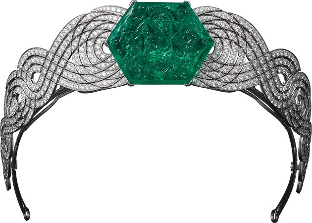
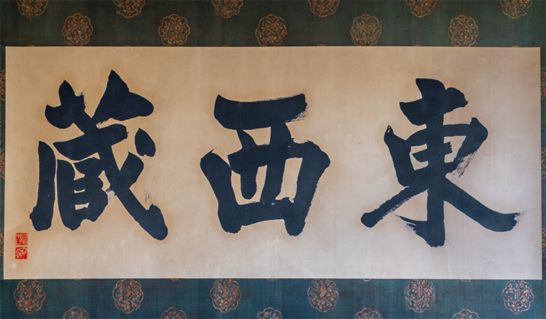
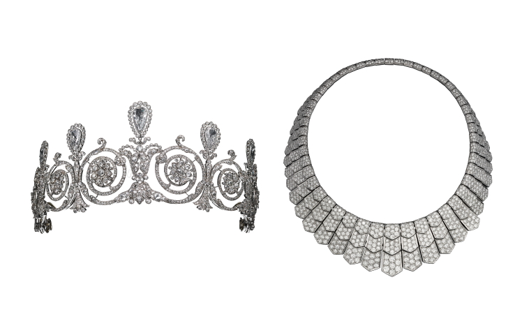
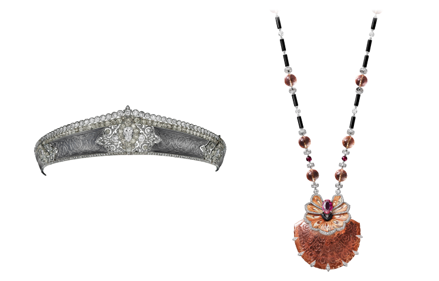
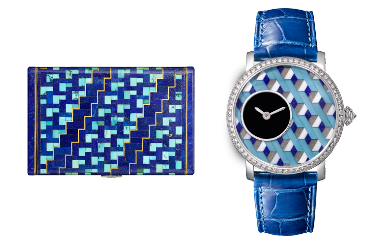
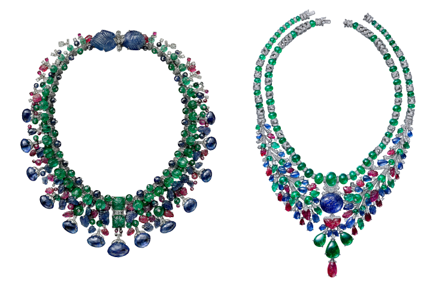

어떤 소재를 사용할 것인가?
어떤 색채를 전달할 것인가?
이 챕터에서는 까르띠에가 혁신적인 디자인을 창조하기
위해 독보적인 노하우로 소재와 색채를 다루는 법을
소개합니다. 플래티늄을 가미해 더욱 돋보이는
다이아몬드, 규화목과 같은 독특한 소재, 다양한 보석을
이용한 대담한 색채 조합까지, 참신하고 창의적인
디자인을 향한 까르띠에의 혁신은 계속됩니다.
이 챕터에서는 까르띠에가 혁신적인 디자인을 창조하기
위해 독보적인 노하우로 소재와 색채를 다루는 법을
소개합니다. 플래티늄을 가미해 더욱 돋보이는
다이아몬드, 규화목과 같은 독특한 소재, 다양한 보석을
이용한 대담한 색채 조합까지, 참신하고 창의적인
디자인을 향한 까르띠에의 혁신은 계속됩니다.
이 챕터에서는 까르띠에가
혁신적인 디자인을 창조하기 위해
독보적인 노하우로 소재와 색채를
다루는 법을 소개합니다.
플래티늄을 가미해 더욱 돋보이는
다이아몬드, 규화목과 같은 독특한
소재, 다양한 보석을 이용한
대담한 색채 조합까지, 참신하고
창의적인 디자인을 향한
까르띠에의 혁신은 계속됩니다.

'가스가 스기'라는 일본의 삼나무를 쇼케이스의 배경으로
활용했습니다. 궁극의 미적 단순성을 지닌 삼나무의 적갈색 나이테는
주얼리를 더욱 돋보이게 합니다. 가장 진귀한 삼나무 중 하나로 꼽히는
가스가 스기는 일본 나라현 가스가산 일대에서 주로 자라며 세련된
나뭇결로 유명합니다.
'가스가 스기'라는 일본의 삼나무를 쇼케이스의 배경으로 활용했습니다.
궁극의 미적 단순성을 지닌 삼나무의 적갈색 나이테는 주얼리를 더욱 돋보이게
합니다. 가장 진귀한 삼나무 중 하나로 꼽히는 가스가 스기는 일본 나라현
가스가산 일대에서 주로 자라며 세련된 나뭇결로 유명합니다.
'가스가 스기'라는 일본의 삼나무를
쇼케이스의 배경으로 활용했습니다.
궁극의 미적 단순성을 지닌 삼나무의
적갈색 나이테는 주얼리를 더욱
돋보이게 합니다. 가장 진귀한 삼나무
중 하나로 꼽히는 가스가 스기는 일본
나라현 가스가산 일대에서 주로 자라며
세련된 나뭇결로 유명합니다.
이 공간의 패브릭은 어둠 속 희미하게 피어오른 안개 사이로 왕실의
보화를 담은 봉인된 상자들이 놓인 공간을 연상시킵니다. 촘촘히 얽어
짠 한국의 전통 소재인 ‘라(羅)’를 사용하여 섬세하고 은은한 반투명의
질감을 표현하였습니다. 이 소재는 한국 전통문화연구소 온지음에서
이번 전시회를 위해 특별히 제작한 것입니다.
이 공간의 패브릭은 어둠 속 희미하게 피어오른 안개 사이로 왕실의 보화를
담은 봉인된 상자들이 놓인 공간을 연상시킵니다. 촘촘히 얽어 짠 한국의 전통
소재인 ‘라(羅)’를 사용하여 섬세하고 은은한 반투명의 질감을 표현하였습니다.
이 소재는 한국 전통문화연구소 온지음에서 이번 전시회를 위해 특별히 제작한
것입니다.
이 공간의 패브릭은 어둠 속 희미하게
피어오른 안개 사이로 왕실의 보화를
담은 봉인된 상자들이 놓인 공간을
연상시킵니다. 촘촘히 얽어 짠 한국의
전통 소재인 ‘라(羅)’를 사용하여
섬세하고 은은한 반투명의 질감을
표현하였습니다. 이 소재는 한국
전통문화연구소 온지음에서 이번
전시회를 위해 특별히 제작한 것입니다.


각 챕터의 마지막에는 까르띠에 주얼리와 한국과 일본의
앤티크 피스가 함께 전시되어 있으며 이는 이번 전시의
하이라이트라고 할 수 있습니다. 앤티크 피스는
스기모토 히로시가 엄선한 개인 소장품, 그리고 이번 전시회를 통해 독점적으로 공개되는 한국의 개인 소장품
컬렉션입니다. 한국과 일본의 앤티크 피스가 지닌
독창적 미학과 역사적 가치는 흥미롭게도 유럽 문화에
뿌리를 둔 까르띠에 주얼리의 고도의 예술성과 조화롭게
공명합니다.
각 챕터의 마지막에는 까르띠에 주얼리와 한국과 일본의
앤티크 피스가 함께 전시되어 있으며 이는 이번 전시의
하이라이트라고 할 수 있습니다. 앤티크 피스는
스기모토 히로시가 엄선한 개인 소장품, 그리고 이번 전시회를 통해 독점적으로 공개되는 한국의 개인 소장품
컬렉션입니다. 한국과 일본의 앤티크 피스가 지닌
독창적 미학과 역사적 가치는 흥미롭게도 유럽 문화에
뿌리를 둔 까르띠에 주얼리의 고도의 예술성과 조화롭게
공명합니다.
각 챕터의 마지막에는 까르띠에
주얼리와 한국과 일본의 앤티크
피스가 함께 전시되어 있으며 이는
이번 전시의 하이라이트라고 할 수
있습니다. 앤티크 피스는 스기모토
히로시가 엄선한 개인 소장품,
그리고 이번 전시회를 통해
독점적으로 공개되는 한국의 개인
소장품 컬렉션입니다. 한국과
일본의 앤티크 피스가 지닌 독창적
미학과 역사적 가치는 흥미롭게도
유럽 문화에 뿌리를 둔 까르띠에
주얼리의 고도의 예술성과
조화롭게 공명합니다.
티아라
까르띠에, 2012
플래티늄, 141.13 캐럿 조각 세공 에메랄드 1개, 다이아몬드
에메랄드는 티아라에서 분리하여 브로치로 착용할 수 있습니다.
팬시 호 소장품
조각 세공된 이 에메랄드는 1925년 파리에서 열린 현대 장식·산업 미술 국제 박람회(Exposition Internationale des Arts Décoratifs et Industriels Modernes)에서 까르띠에가 출품했던 ‘베레니스(Berenice)' 네크리스에 처음 세팅되었습니다.

<무준사범(無準師範)의 사찰 현판 글씨 모사본>, 스기모토 히로시, 2022, 개인 소장품
현판의 원본은 일본의 국보로 ‘교토 5대 선종 사찰’ 중
하나인 도후쿠지에 보관되어 있습니다. 글씨는 ‘동서장
(東西蔵)’이라 쓰여 있습니다. 스기모토는 이 글을
모사한 후 직접 디자인한 앤티크 패브릭으로
장식했습니다. 작가는 상상력을 발휘하여 까르띠에의
티아라와 자신의 작품인 <유리 탑>을 함께 전시해
'동서양의 만남'을 표현했습니다. <유리 탑>은 스기모토
히로시가 앤티크 오브제에 유리 지붕과 받침대를 더한
작품입니다. 두 작품은 한국의 조선시대에 만들어진
아름다운 자개 상감 머리빗 상자 위에 놓여있습니다.
‘동서장’에는 보물의 보관함이라는 의미도 담겨
있습니다.
현판의 원본은 일본의 국보로 ‘교토 5대 선종 사찰’ 중
하나인 도후쿠지에 보관되어 있습니다. 글씨는 ‘동서장
(東西蔵)’이라 쓰여 있습니다. 스기모토는 이 글을
모사한 후 직접 디자인한 앤티크 패브릭으로
장식했습니다. 작가는 상상력을 발휘하여 까르띠에의
티아라와 자신의 작품인 <유리 탑>을 함께 전시해
'동서양의 만남'을 표현했습니다. <유리 탑>은 스기모토
히로시가 앤티크 오브제에 유리 지붕과 받침대를 더한
작품입니다. 두 작품은 한국의 조선시대에 만들어진
아름다운 자개 상감 머리빗 상자 위에 놓여있습니다.
‘동서장’에는 보물의 보관함이라는 의미도 담겨
있습니다.
현판의 원본은 일본의 국보로
‘교토 5대 선종 사찰’ 중 하나인
도후쿠지에 보관되어 있습니다.
글씨는 ‘동서장(東西蔵)’이라 쓰여
있습니다. 스기모토는 이 글을
모사한 후 직접 디자인한 앤티크
패브릭으로 장식했습니다. 작가는
상상력을 발휘하여 까르띠에의
티아라와 자신의 작품인 <유리 탑
>을 함께 전시해 '동서양의
만남'을 표현했습니다. <유리 탑>
은 스기모토 히로시가 앤티크
오브제에 유리 지붕과 받침대를
더한 작품입니다. 두 작품은
한국의 조선시대에 만들어진
아름다운 자개 상감 머리빗 상자
위에 놓여있습니다. ‘동서장’에는
보물의 보관함이라는 의미도 담겨
있습니다.
-
디자인의 흔적 No03

메탈 기술2014 1906메탈은 주얼리의 중요한 구조물이자 스톤을 고정하는 받침대라고 할 수 있습니다. 하지만 여기에 다양한 기법을 더하면 다채로운 우아함을 표현하는 주역이 되기도 합니다. 20세기로 접어들 무렵, 까르띠에는 최초로 플래티늄을 주얼리에 적용하는 선구안을 발휘합니다. 당시 국제적으로 명성을 떨친 까르띠에의 갈란드 스타일역시 플래티늄의 도입으로 탄생했습니다. 플래티늄은 강도가 높고 유연해 얇고 가볍게 가공할 수 있었습니다. 꽃이나 나뭇가지, 리본, 레이스 같은 오픈워크 패턴 등 갈란드 스타일 특유의 섬세하고 명확한 라인을 표현하는 데 적합했던 것입니다. 또한 플래티늄이 지닌 순백의 광채는 다이아몬드를 한층 더 돋보이게 했습니다. 아름다움을 추구한 메종의 열정은 3색 골드(핑크, 옐로우, 화이트)와 같은 독특한 메탈 조합을 소개하는 것으로 이어집니다. 공업용 소재인 스틸을 주얼리에 적용하거나 고도로 전문화된 고대의 골드 기술을 계속해서 연구한 것 역시 까르띠에의 기술적·심미적 도전을 보여줍니다. -
디자인의 흔적 No04

스톤 기술2010 1912까르띠에의 모든 크리에이션을 통틀어 눈에 띄는 것은 메종의 인-하우스 장인이 보유한 뛰어난 기술력과 장인정신입니다. ‘글립틱(glyptic)’이라 불리는 경석(하드 스톤) 조각이 그중 하나입니다. 글립틱은 제이드, 아게이트, 재스퍼, 쿼츠, 규화목(땅속에서 화석화된 나무)같은 단단한 보석에 직접 조각을 하는 고도의 기술입니다. 글립틱 아트는 오랜 세월 땅속에 잠들어 있던 스톤의 생명력을 깨우며 이를 새로운 형태로 재구성합니다. 발굴한 스톤의 고유한 특징이 바로 창작의 출발점이 되는 것입니다. 까르띠에는 현재 노하우 전승 위기에 놓인 이 기술을 다음 세대에 물려주기 위해 후진 양성에도 힘쓰고 있습니다. 스톤에 선을 새겨 넣는 인그레이빙, 패브릭 혹은 금속 와이어에 비즈 형태의 스톤을 연결하는 스트링잉 역시 까르띠에의 작품을 다채롭게 하는 기술입니다. -
디자인의 흔적 No05

장인 기술과 장식 기술2017 1930메종의 역사를 되짚어볼 때 까르띠에는 장식 미술에서 다양한 형태의 표현 방식을 찾고 탐구해 왔습니다. ‘하드 스톤 마케트리’라 불리는 상감 세공은 유럽에서도 오래전부터 가구와 일상용품에 적용해 온 전통적인 기법입니다. 까르띠에는 이 기술을 차용해 라피스 라줄리와 터키석 조각으로 로마 건축양식의 집을 연상케 하는 모자이크 무늬를 만들어 배니티 케이스와 시계 다이얼에 그려 넣었습니다. 최근에는 이 기술을 새롭게 전개하여 장미꽃잎을 활용한 '플로럴 마케트리'와 밀짚을 활용한 '스트로 마케트리'로 발전시켰습니다. 까르띠에는 에나멜 작업, 특히 '기요쉐 에나멜' 같은 다른 장식 기술에서도 영감을 얻었습니다. 까르띠에는 이 기법으로 1900년대부터 시계와 손목 시계를 장식하고 있습니다. -
디자인의 흔적 No06

까르띠에의 컬러 팔레트2016 1936까르띠에의 팔레트에 깊고 풍부한 색상 조합이 추가된 것은 20세기 초였습니다. 발레 뤼스의 의상과 무대미술에 영감을 받은 독특하고도 역동적인 컬러 조합이 탄생한 것입니다. 소위 '피콕 패턴'이라 불리는 블루와 그린의 조합이 대표적입니다. 후에 레드와 블랙, 블랙과 화이트, 블루와 퍼플 등으로 확장되었습니다. 1920년대부터 메종은 나뭇잎이나 꽃, 과일 모양을 새긴 보석으로 특징 지을 수 있는 인도의 전통 액세서리에서 영감을 얻은 주얼리를 만들기 시작했습니다. 1970년대에 이르러 까르띠에는 이 컬렉션에 ‘뚜띠 프루티’, 직역하면 ‘모든 과일’이라는 뜻의 이름을 붙였고, 이는 현재 까르띠에 스타일을 상징하는 대표적인 라인으로 자리매김했습니다. 최근 새롭고 신선한 젬스톤의 조합이 등장하면서 메종의 팔레트는 더욱 풍성해지고 있습니다. 까르띠에는 극명한 색의 대비보다 미묘하게 다른 색감을 아름답게 조합하는 새로운 컬러 조합을 탐색하는데 몰두하고 있습니다.